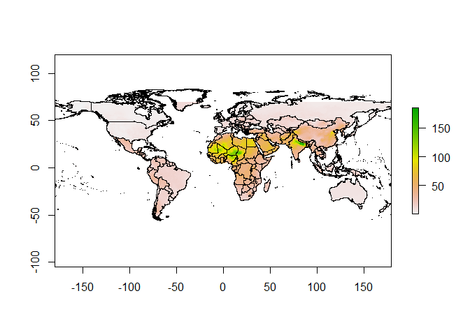

This package contains ten datasets provided by the members of the Data Integration Task Force, a multi-disciplinary group of experts established as part of the recommendations from the first meeting of the WHO Global Platform for Air Quality in Geneva, January 2014.
who_world_map:sfWHO world map shapefileground_monitor:sfYearly global ground monitor stationpopulation_weighted_concentrations:dfYearly population weighted pm2.5 concentrations by country or WHO regionglobal_exceed:dfYearly exceedances by country at 10,15,20,25 spatial scalepred_2011:sf2011 Global Predictions spatial resolution (0.1° × 0.1°)pred_2012:sf2012 Global Predictions spatial resolution (0.1° × 0.1°)pred_2013:sf2013 Global Predictions spatial resolution (0.1° × 0.1°)pred_2014:sf2014 Global Predictions spatial resolution (0.1° × 0.1°)pred_2015:sf2015 Global Predictions spatial resolution (0.1° × 0.1°)pred_2016:sf2016 Global Predictions spatial resolution (0.1° × 0.1°)
Installation
You can install the development version of dimaqdata from GitHub with:
# install.packages("devtools")
devtools::install_github("environmental-intelligence-exeter/dimaqdata")Example
Plot 2016 global predictions
library(dimaqdata)
library(raster)
library(dplyr)
# filter prediction data by value
data_new = pred_2016 %>% dplyr::select("Longitude", "Latitude", "Mean")
# generate raster from prediction
r = raster::rasterFromXYZ(data_new)
# set crs the same as WHO world map
crs(r) = crs(who_world_map)
# base plot
plot(r)
plot(who_world_map$geometry, add = T)